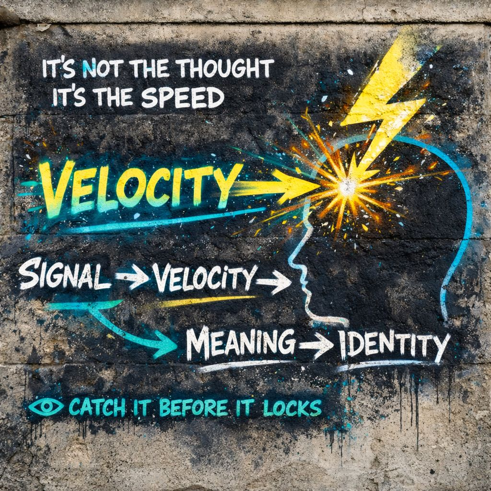

⚡ Velocity
It’s how fast it hit you.”
⚡ Speed spike
🧩 Meaning locks
🎭 Identity reacts
👁️ Catch the speed…
and the rest slows down.
📍 Foundation
We usually think the problem is what we think.
IPT shifts the spotlight:
how fast the thought arrives.
Two ideas can be identical in content… but the faster one feels:
- more true
- more urgent
- more you
⚙️ Core Definition (IPT)
Not just speed of thought…
Speed of:
- emotional charge
- interpretation
- identity attachment
📡 The Full Sequence
Velocity sits in the middle like an accelerator pedal.
You don’t notice it… but it controls everything downstream.
🧠 Why Speed Feels Like Truth
When something hits quickly:
- 🧠 less analysis
- ⚡ more certainty
- 🧩 faster meaning lock
A slow thought feels optional. A fast one feels like reality itself.
🌪 High Velocity Events
These are the moments IPT watches closely:
- outrage spikes
- sudden offense
- instant agreement
- immediate rejection
- “this is obviously wrong/right”
- emotional surges before explanation
🎯 Outrage As Engineered Velocity
Modern systems do not just send signals.
They package velocity.
- sharp framing
- emotionally loaded language
- identity hooks
- urgency cues
- moral pressure
You do not build the reaction. You inherit it already in motion.
🧩 Velocity → Meaning Lock
The faster the signal moves… the faster meaning hardens.
- fewer alternative interpretations
- less ambiguity tolerance
- quicker identity alignment
It snaps into place.
🎭 Velocity → Identity
When velocity is high enough:
You do not just think something…
You become the position almost instantly.
“This is who I am”
“People like me don’t do that”
“That’s not us”
No slow build.
🌐 Generalized Other + Velocity
The internal crowd doesn’t just exist.
It accelerates signals.
- “People will judge this” → ⚡ spike
- “This won’t be accepted” → ⚡ spike
- “This is unsafe socially” → ⚡ spike
Velocity becomes socially amplified speed.
⚠️ Failure Mode: Velocity Overload
- 🧠 observation gets skipped
- 🧩 meanings lock prematurely
- 🎭 identity reacts automatically
Result:
- outrage loops
- defensive positioning
- zero flexibility
- rapid escalation
You’re being carried.
👁️ IPT Intervention Point
IPT does not fight the thought.
It watches the speed.
That question alone:
- slows processing
- reopens interpretation
- weakens automatic identity lock
🧠 Micro-Detection Skills
You can spot velocity in real time:
- sudden certainty
- emotional spike without explanation
- urge to respond immediately
- body tension before clarity
- “I already know what this is” feeling
That’s speed.
🔓 The Gap (This Is The Gold)
📡 Signal
and
🧩 Meaning
there is a tiny window.
Velocity tries to close it instantly.
IPT tries to hold it open.
Inside that gap:
- alternative meanings exist
- identity has not locked yet
- reaction is still optional
⚖️ Good Velocity vs Bad Velocity
Useful Velocity
- reflexes
- pattern recognition
- trained intuition
Problematic Velocity
- identity-triggered reactions
- outrage
- fear amplification
- social pressure responses
Is awareness present?
🔥 IPT Edge
Mead explains:
IPT adds:
determines control
👁️ Final Distillation
that turns signal into identity
before you can examine it.
It’s how fast it hit you.
⚡ Speed spike
🧩 Meaning locks
🎭 Identity reacts
👁️ Catch the speed…
and the rest slows down.